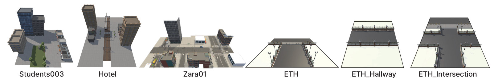
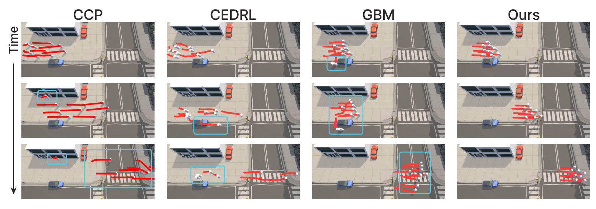
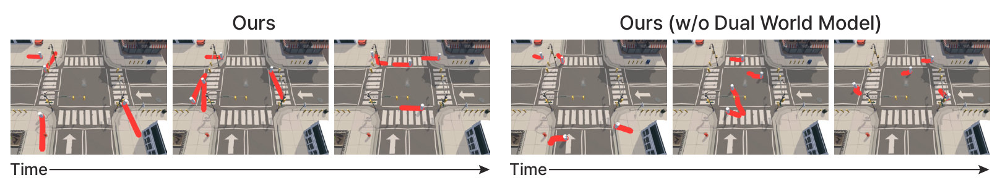
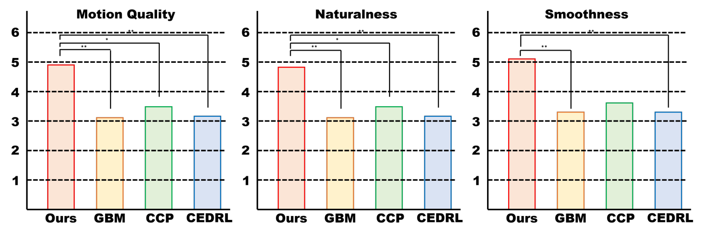

Abstract
Selecting a next motion in a populated scene is not just a matter of avoiding what is currently in the way: an action can be locally feasible yet drift onto the road instead of the crosswalk, cut into a stream of crossing pedestrians, or bottleneck a narrow passage. These failure modes are invisible from the current state alone, and acting on them requires reasoning about what each candidate action will cause. World models offer exactly this, namely action-conditioned predictions of the future, but rolling them out at every decision step is a cost deployable navigation systems cannot pay, and the field has largely traded foresight for speed. We argue this is a false dichotomy. The natural place for a world model in human-aware navigation is at training time, as a preference oracle that distills foresight into a fast policy, rather than at inference time, as an online planner. We pair a discrete visual action prior with two task-aligned world models, one for nearby social dynamics and one for future scene semantics, that score candidate actions by their predicted consequences and refine the policy through group-relative preference distillation. At deployment, both world models are removed and the policy acts in a single forward pass. Across five held-out scenes, this yields navigation that is simultaneously safer, more socially and group-coherent, and more goal-directed than strong reactive and learned baselines, with naive observers rating the resulting motion as more human-like. Taken together, our findings point to a different approach for bringing world-model foresight into deployable agents: not accelerating rollouts, but amortizing them into the policy so that the cost of looking ahead is confined to training.
Video
Method
We train the policy in two stages. In Stage 1, a pretrained vision-language model (Qwen3-VL-2B with LoRA) is fine-tuned into a VLA policy that classifies the next motion over a fixed vocabulary of motion anchors, imitating human demonstrations. In Stage 2, two navigation-aligned world models predict what each candidate anchor would lead to, and the resulting preferences are distilled into the policy with Group Relative Policy Optimization (GRPO). The world models are used only during training.

Motion anchors
Demonstrations recorded at 25 FPS are cut into 20-frame (0.8 s) clips and clustered into K = 100 anchors. At each step the policy selects one anchor, executes it, and selects again.
State Transition World Model
Predicts the next relative position and velocity of every nearby pedestrian and vehicle under a candidate anchor. A direction term in the loss captures who is heading toward whom.
Semantic Transition World Model
An EDM-style denoiser that predicts the future segmentation of sidewalk, crosswalk, road, vehicle, building and obstacle. Pedestrians are ignored in the target, so this branch learns the layout and leaves agent motion to the state branch.
Preference-guided GRPO
Each group holds ten candidates: the policy’s top five anchors and five sampled uniformly from the rest. GRPO moves the policy toward candidates that score above the group mean.
Each candidate \(a_t^{(i)}\) is scored by its predicted consequences,
$$r_t^{(i)} = G_t^{(i)} - C_t^{(i)} - P_{\mathrm{cur},t}^{(i)} - P_{\mathrm{fut},t}^{(i)} + M_t^{(i)},$$
where \(G\) is goal progress, \(C\) is action smoothness, \(P_{\mathrm{cur}}\) is immediate interaction risk, \(P_{\mathrm{fut}}\) is future interaction risk from the State Transition World Model, and \(M\) is semantic validity from the Semantic Transition World Model. All terms are scale-normalized and summed with unit weights.
At deployment, the world models, candidate groups and scoring are discarded. The policy returns a distribution over anchors in a single forward pass, 65 ms per decision on one RTX 6000 Ada, so its cost does not depend on the size, denoising depth or rollout horizon of the world models.
Results
We reconstruct the ETH/UCY pedestrian datasets as Unity scenes. The policy and both world models are trained on Hotel, Zara01, ETH and Students003. We evaluate on five scenarios: held-out trajectories in Zara01 and Students003; ETH_Hallway and ETH_Intersection, two layouts built from the ETH asset that are never seen in training; and Zara01_Group, which adds larger groups. We compare against GBM (Dutra et al., 2017), CCP (Panayiotou et al., 2022) and CEDRL (Panayiotou et al., 2025). All results are averaged over three runs.

1. Closed-Loop Navigation
Our policy has the highest goal success rate (GSR) and the lowest social-region violation rate (SRVR) in every scenario, and the lowest or tied-lowest group distance (GD) in four of five. On Zara01_Group, SRVR falls from 17.4 for the next-best method to 1.2 while GSR rises from 38.9 to 77.8. Fewer violations do not come from more conservative behavior: GSR is higher than the strongest baseline everywhere.
| Method | Zara01 | Zara01_Group | Students003 | ETH_Intersection | ETH_Hallway | ||||||||||
|---|---|---|---|---|---|---|---|---|---|---|---|---|---|---|---|
| GSR ↑ | SRVR ↓ | GD ↓ | GSR ↑ | SRVR ↓ | GD ↓ | GSR ↑ | SRVR ↓ | GD ↓ | GSR ↑ | SRVR ↓ | GD ↓ | GSR ↑ | SRVR ↓ | GD ↓ | |
| GBM | 55.6 | 21.0 | 0.6 | 38.9 | 17.5 | 1.9 | 64.0 | 15.2 | 1.4 | 72.2 | 23.5 | 2.7 | 68.8 | 9.3 | 1.3 |
| CCP | 33.3 | 16.0 | 2.6 | 27.8 | 19.5 | 4.8 | 28.0 | 20.0 | 3.4 | 61.1 | 13.0 | 2.3 | 62.5 | 7.5 | 1.8 |
| CEDRL | 50.0 | 15.6 | 1.3 | 22.2 | 17.4 | 5.9 | 37.0 | 27.1 | 1.8 | 55.6 | 13.3 | 2.9 | 56.3 | 19.1 | 1.5 |
| Ours | 72.2 | 7.0 | 0.6 | 77.8 | 1.2 | 2.1 | 66.0 | 7.2 | 0.7 | 83.3 | 3.9 | 0.9 | 87.5 | 0.9 | 0.8 |
GSR and SRVR in %. Higher is better for GSR; lower is better for SRVR and GD. Best in bold.
2. Qualitative Comparison
Red curves trace each agent over the previous 60 frames.



3. Ablation Study
Removing both world models causes the largest drop in every scenario. The two branches catch different failures. Without the state model, GSR on ETH_Intersection falls from 83.3 to 51.9, since crossing flows depend on who is heading toward whom. Without the semantic model, SRVR on ETH_Hallway rises from 0.9 to 13.7, since narrow passages penalize invalid footprints more than mispredicted neighbors. Mixing top-ranked and random candidates also matters: top-10 alone gives candidates too similar to learn from, and random-10 alone gives candidates too irrelevant to matter.
| Variant | Zara01 | Zara01_Group | Students003 | ETH_Intersection | ETH_Hallway | ||||||||||
|---|---|---|---|---|---|---|---|---|---|---|---|---|---|---|---|
| GSR ↑ | SRVR ↓ | GD ↓ | GSR ↑ | SRVR ↓ | GD ↓ | GSR ↑ | SRVR ↓ | GD ↓ | GSR ↑ | SRVR ↓ | GD ↓ | GSR ↑ | SRVR ↓ | GD ↓ | |
| Ours | 72.2 | 7.0 | 0.6 | 77.8 | 1.2 | 2.1 | 66.0 | 7.2 | 0.7 | 83.3 | 3.9 | 0.9 | 87.5 | 0.9 | 0.8 |
| w/o both WMs | 25.9 | 12.6 | 0.7 | 16.7 | 47.0 | 1.9 | 44.7 | 14.4 | 0.7 | 40.7 | 13.5 | 1.1 | 58.3 | 9.9 | 1.0 |
| w/o State WM | 44.4 | 10.7 | 0.6 | 27.8 | 22.3 | 1.7 | 47.0 | 9.5 | 0.8 | 51.9 | 10.6 | 1.0 | 58.3 | 8.7 | 0.8 |
| w/o Semantic WM | 44.4 | 9.3 | 0.6 | 38.9 | 17.5 | 2.3 | 63.3 | 8.9 | 0.8 | 66.7 | 6.2 | 0.9 | 70.8 | 13.7 | 0.6 |
| w/o VLM | 48.1 | 10.9 | 0.9 | 29.6 | 7.4 | 1.7 | 60.0 | 10.6 | 0.8 | 63.0 | 7.4 | 1.1 | 66.7 | 16.9 | 0.9 |
| Top-10 candidates | 44.4 | 18.2 | 0.7 | 14.8 | 42.7 | 3.2 | 61.3 | 8.3 | 1.0 | 55.6 | 13.9 | 1.0 | 62.5 | 3.4 | 0.7 |
| Random-10 candidates | 22.2 | 20.2 | 0.7 | 18.5 | 18.5 | 2.5 | 57.3 | 8.5 | 0.8 | 44.4 | 14.2 | 0.8 | 70.8 | 12.5 | 1.2 |
WM: world model. Best in bold.

4. World Model Predictions
Both world models are accurate on held-out data, so the preferences that guide GRPO rest on reliable predictions. The semantic branch reaches 87.0% mIoU and 99.3% pixel accuracy; the state branch reaches 0.18 m position ADE and a 20.8° heading error.

5. Human-Likeness
Twenty participants rated 40 anonymized rollouts on 7-point Likert scales for motion quality, naturalness and smoothness. Our method received the highest mean on all three criteria. The differences are significant against every baseline, except CCP on smoothness (Holm-corrected Wilcoxon signed-rank tests).

Our rollouts also stay closest to held-out human trajectories, with the lowest average displacement error (ADE) in both scenes.
| Method | Zara01 | Students003 | ||
|---|---|---|---|---|
| ADE ↓ | FDE ↓ | ADE ↓ | FDE ↓ | |
| GBM | 0.3057 ±0.0345 | 0.5203 ±0.0509 | 0.2147 ±0.0026 | 0.4194 ±0.0056 |
| CCP | 0.2406 ±0.0005 | 0.4524 ±0.0005 | 0.2053 ±0.0031 | 0.3873 ±0.0060 |
| CEDRL | 0.3629 ±0.0071 | 0.6817 ±0.0134 | 0.2338 ±0.0030 | 0.4382 ±0.0058 |
| Ours | 0.2064 ±0.0069 | 0.3897 ±0.0141 | 0.1994 ±0.0026 | 0.3948 ±0.0052 |
Displacement error to held-out human trajectories (m), with 95% confidence intervals. Best in bold.
Limitations
Each world-model prediction covers a single anchor, so behavior that unfolds over several seconds, such as delayed yielding or group reformation, can be missed. The fixed vocabulary of 100 anchors approximates rare or abrupt motions imperfectly, and the semantic score relies on predefined labels and rule-based thresholds that may need adjusting for new environments. All experiments are run in reconstructed Unity scenes.
BibTeX
@inproceedings{hong2026seeing,
title = {Seeing Beyond the Next Step: World-Model-Guided
Human-Like Navigation in Multi-Agent Scenes},
author = {Hong, Seong-Eun and Hwang, JuYeong and Kim, Jinhyun
and Jang, Hanyoung and Kang, HyeongYeop},
booktitle = {Advances in Neural Information Processing Systems},
year = {2026}
}